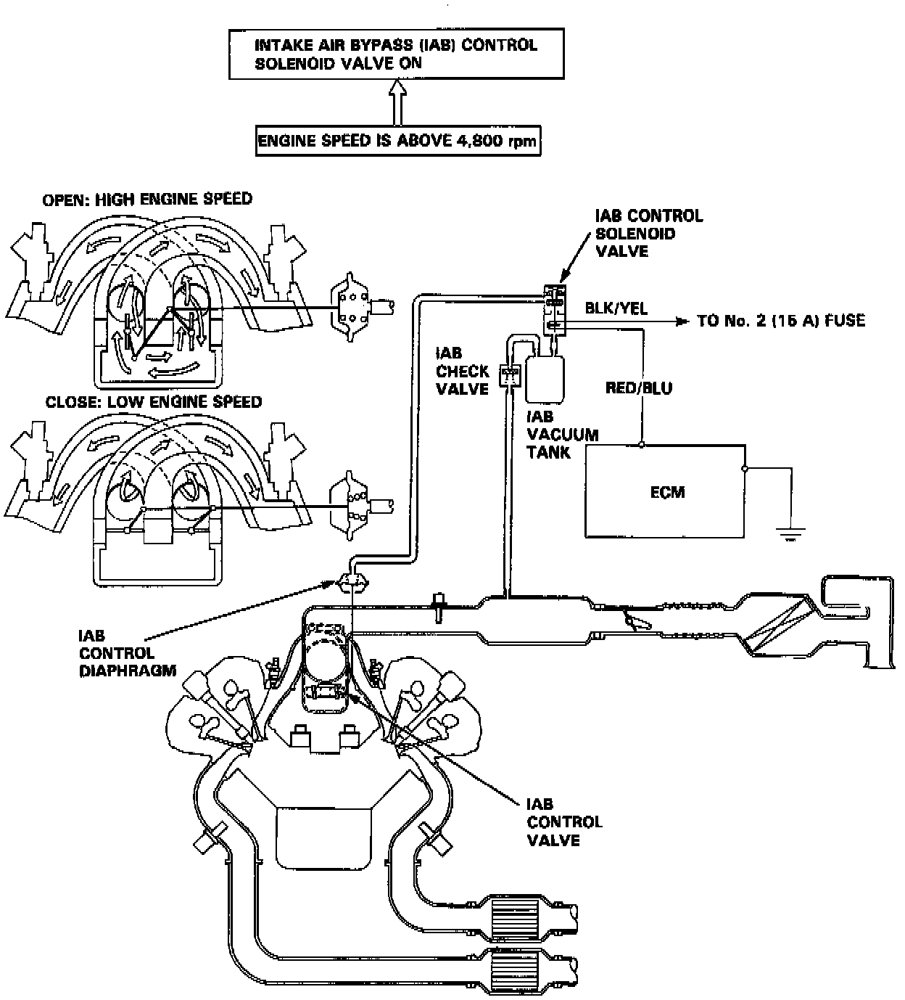

Variable Induction System: Description and Operation

PURPOSE/OPERATION
Satisfactory power performance is achieved by closing and opening the intake air bypass control valves. High torque at low engine speed is achieved when the valves are closed, whereas high power at high engine speed is achieved when the valves are opened.